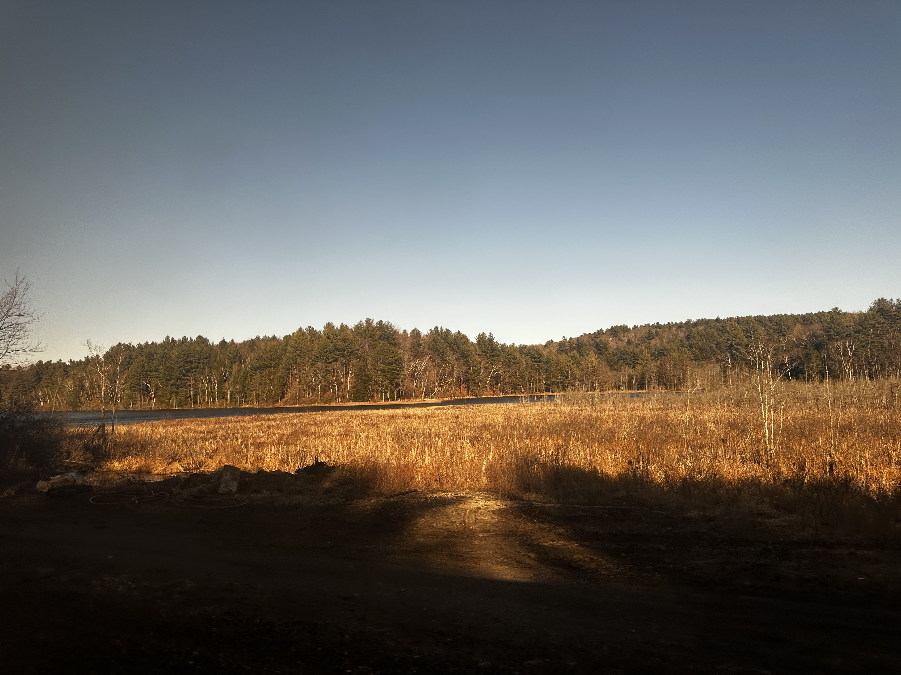
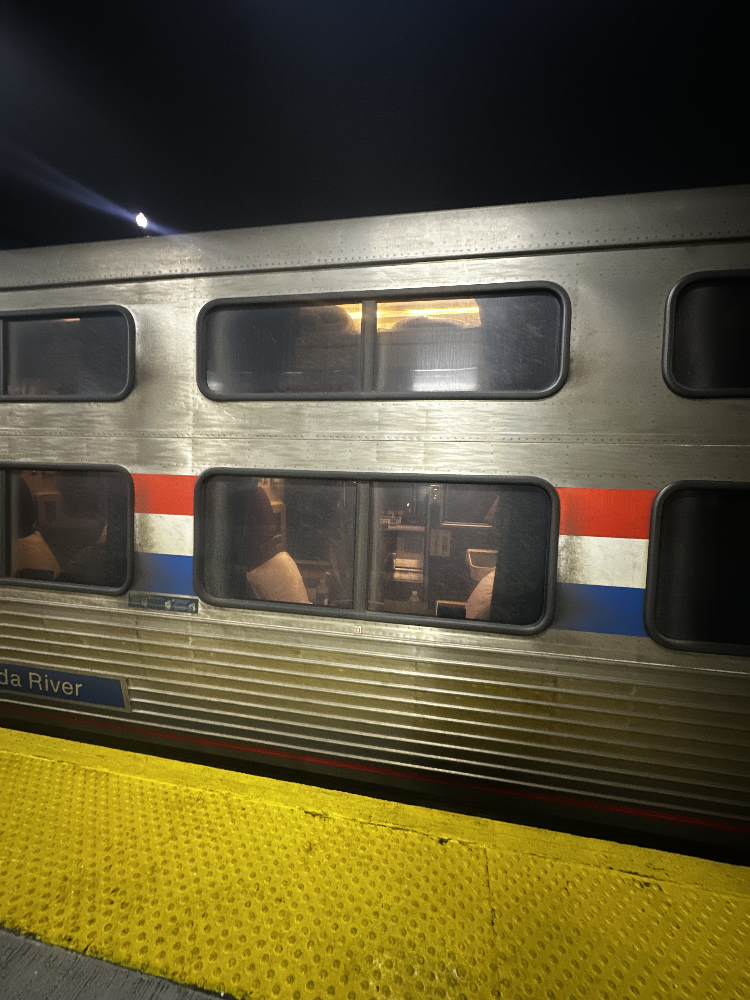
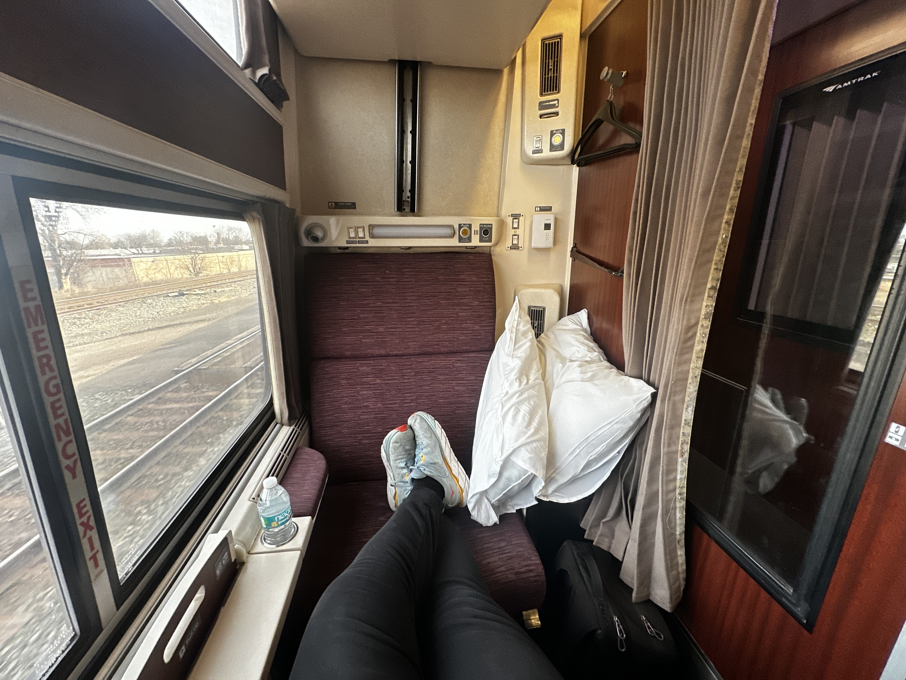
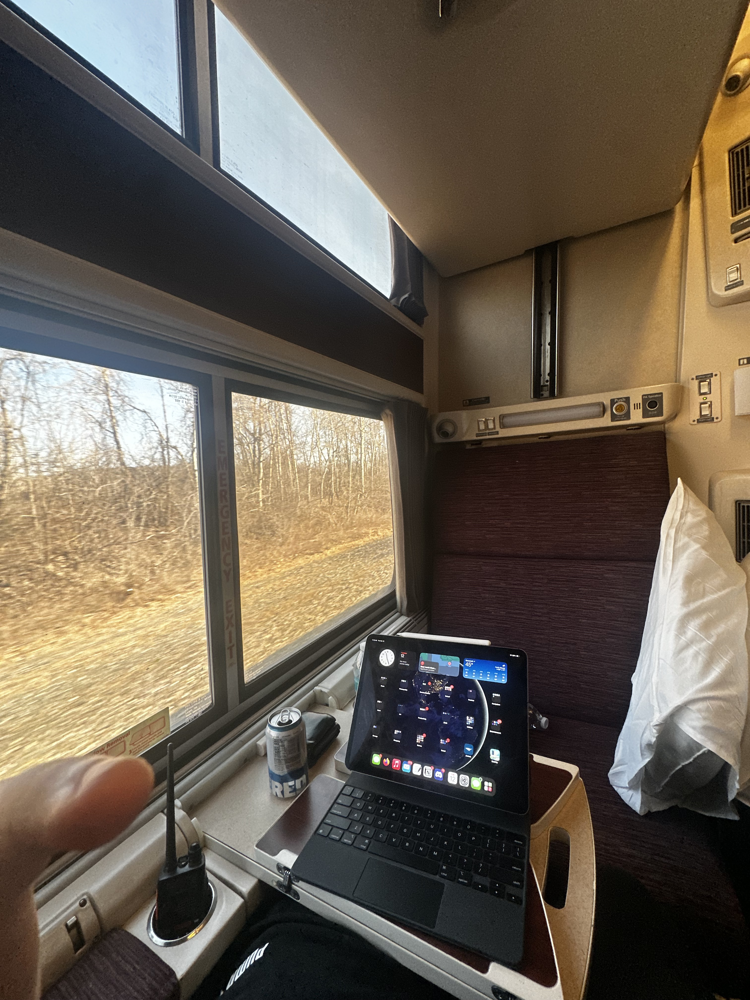

The Viewliner 2 is very nice and comfortable.
It’s a trip report!

Today I’m in an Amtrak sleeper going from Rochester to Boston. It was only about $50 more than a coach ticket ($90 today), and is paying for itself with the inclusion of a solid lunch and dinner as well as free drinks and snacks. This is my first time in an Amtrak sleeper as it’s usually wildly expensive.

I’m in one of the newer Viewliner II cars, manufactured by French company CAF USA between 2015 and 2021. It’s very nice inside - lots of wood paneling, good lighting, and comfortable seats/beds. This is better than any domestic first class airline, period, and the food is better too. Our attendant is a very nice and helpful older gentleman. I have my own temperature, fan, and lighting controls for my room, as well as a sink and trash can.

Driving time for this trip would be around six hours without stops, but I’d add at least another 90 minutes for a meal or two, bathroom breaks, and gas. It would likely cost around $80 for food and gas. The train is 10 hours. It’s a few hours slower than driving, but so much more comfortable and peaceful.

An equivalent flight would take 3.5 hours, cost $100 more, and be packed like a sardine into economy class. A first class ticket would be around $600, and still be much less comfortable.
The food is better than anything you’d get at a service plaza or a domestic flight. I had Chicken Parmesan for lunch with a salad and a roll. It was good, on par with something I’d make myself. Tonight I’ll have Beef Bourgogne. Other options include an Asian glazed salmon, vegan kebabs, and enchiladas. Meals also come with a free beer/wine/cocktail!
Overall, I don’t think this is worth $700 for a day trip. But $50 over the coach price? In a heartbeat. I’m really enjoying this trip.